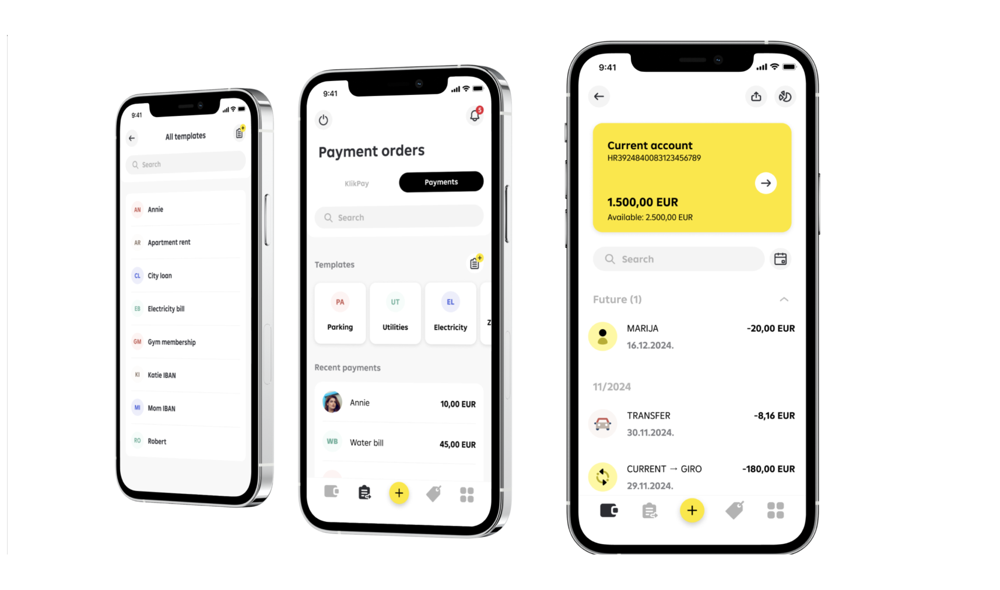

- Role
- Product Lead
- Focus
- Mobile banking ecosystem
- Period
- 2020–2022
- Delivery
- Cross-market design system
Measurement note: The following outcomes are directional, portfolio-reported signals from internal 2020–2022 rollout dashboards aggregated across participating mobile-banking markets. Exact metric definitions, denominators and cohort sizes are not available here, so this case does not use them as independently reproducible headline claims.
My role & scope
As Product Lead, I led discovery, product-design direction, design-system governance and rollout measurement, working with engineering, compliance, support and local-market stakeholders.

Challenges
The mobile app was losing trust, with low store ratings, slow interactions, failed transfers and weak retention in internal reporting. Support was swamped; UI and processes differed across 16 countries, and there were no analytics to steer decisions. Organizationally, there was no design governance, unclear ownership, and slow release cycles.
The Process
Discovery & Decisions
Instrumented analytics (Firebase/Mixpanel + Smartlook/Hotjar), ran interviews, and mapped jobs/flows to surface the biggest losses. Internal baselines showed high abandonment on key screens and at confirmation. A “rebuild vs. patch” workshop with stakeholders led to a full redesign anchored by a unified design system.
Design System & Execution
Built a bank-grade component library (WCAG-ready, dark mode, motion guidelines). Legal approved a new tone of voice. Localized for 8 languages. Ran flagged microcopy A/B tests that produced a directional funnel-improvement signal on critical steps. Standardized state design and safe defaults for high-risk flows.
Org & Operating Model
Stood up the initial team in 5 weeks. Introduced OKRs (e.g., rating ≥4.5★, NPS ≥60), two-week sprints, monthly reporting, and cross-functional reviews with Product, Engineering, Compliance, and Support. Launched in-app NPS/CSAT and real-time dashboards within 48 hours of go-live.
Iteration & Course-Correct
An early, more playful visual direction under-performed in tests (“not bank-grade”). The team pivoted to a trust-first visual and content system without sacrificing clarity or speed.
Experiments & What We Measured
- KYC step order + microcopy → compared with flags and internal cohorts; the strongest variant produced a directional funnel-improvement signal
- Payment review density → faster confirmations without missed details (tracked step-time and error rate)
- Card control placement → shorter time-to-action for freeze/unfreeze, show PIN, set limits
- Empty-state education → fewer “how do I start?” support tickets
Core KPIs: step-level drop-off, task success, time-to-complete, support tickets per 1k users, App Store rating, NPS/CSAT, and monthly mobile transaction volume.
Outcome
- App-store signal: internal reporting showed a substantial rating improvement during the 2020–2022 rollout
- Usage signal: reported mobile transaction volume grew materially across participating markets
- Behavioral signal: internal dashboards showed lower step-level abandonment and faster completion on KYC and payments
- Copy signal: flagged microcopy tests indicated better funnel completion on key steps
- Operating maturity: NPS/CSAT and live dashboards enabled ongoing iteration after launch
What Was Shipped
- A cohesive design system with consumer-friendly and conservative banking visual directions with tokens and reusable, WCAG-ready patterns (including dark mode and motion)
- Redesigned onboarding/KYC, payments, cards, and issue/recovery flows with standardized states and safe defaults
- Copy standards and error-handling framework approved by Legal
- Instrumentation plan and live dashboards for ongoing optimization
Behind the Decisions: Reflections & Trade-offs
This project was a live-fire exercise in turning regulation into design, not bureaucracy.
Compliance came in with non-negotiables: PSD2, SCA, KYC, audit trails. Users came in with zero patience for “mystery steps” and failed payments. The TL;DR version of this story is “we simplified the flows.” The real story is that we kept almost every step and completely rewired how those steps felt.
The team used the high baseline abandonment as a forcing function. Every extra field, every second of loading, every line of legalese had to earn its place. Where we couldn’t remove friction, we made it explicit: clear states, plain language, and A/B-tested copy that showed a directional improvement without changing the legal requirements.
This only worked because all the right people stayed in the room. Product kept scope sane, Engineering shipped incrementally, Compliance and Legal vetted tone in eight languages, Support called out the errors that actually triggered calls, and Analytics let the team monitor app-store sentiment, mobile usage and journey completion alongside the rollout.

